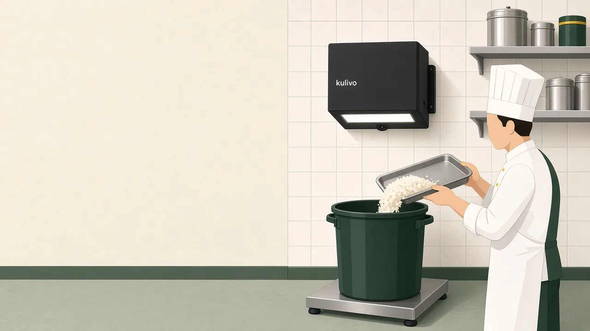
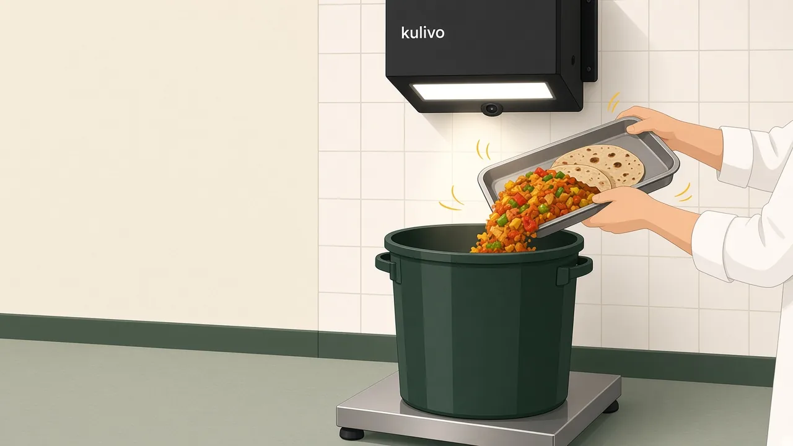
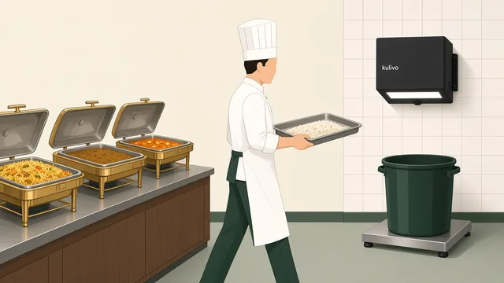
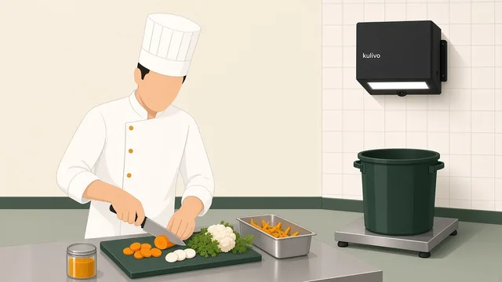
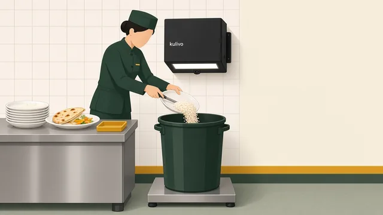
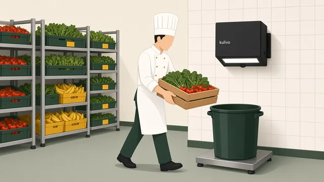

Executive chef
See which dishes come back, and when.
- Waste by dish, meal and station
- The image and weight behind every number
- Repeat losses visible across services
Food waste measurement for hotel kitchens
Kulivo puts a camera and a scale at your waste bin. Each discard is photographed, weighed and matched to a dish, so your chefs know where to act and management can see what waste is worth.
One kitchen · 30 days · free. Installed and set up by Kulivo.

Rice
8.0 kg
₹800 est. value
Image + weight linked · illustrative data
By the end of service it’s gone. Was it rice or dal? A buffet refill or a prep trim? ₹800 or ₹8,000? Without a record, every conversation about waste starts with a guess.
Kulivo turns each discard into a record your chef and your finance team can both trust: what it was, how much, when, where, and roughly what it cost.
How it works

Food goes into the bin like it always has. The bin stands on a stainless-steel floor scale, beneath a camera mounted on the wall.
The camera takes an image and the scale takes the weight. AI matches the food to a dish from your menu, and Kulivo’s team reviews those matches.
Records arrive mostly in real time, tagged with the meal, station and time, and valued using configured food rates.
No item-by-item logging at the bin. No clipboards. No separate weighing.
The dashboard Available today
Waste by dish, meal and station. Estimated food value. Waste per cover. Trends and period comparisons. Every total traces back to the records behind it. Try the sample below.
Rice is 57% of recorded waste.
| Time | Dish | Weight | Est. value |
|---|---|---|---|
| 21:10 | Rice | 8 kg | ₹800 |
| 21:02 | Mixed vegetables | 4 kg | ₹600 |
| 20:48 | Dal | 3 kg | ₹330 |
Illustrative interface built from current dashboard capabilities. All numbers are fictional. Food value uses sample rates (rice ₹100/kg, mixed vegetables ₹150/kg, dal ₹110/kg); waste per cover uses cover counts entered by the kitchen.
Across the kitchen
A buffet return and a preparation loss need different responses. The record shows what was thrown away and when. Your team brings the reason.

Look forDishes that keep coming back after service.
ConsiderBatch sizes and the timing of the final refill.

Look forIngredients behind repeated prep losses.
ConsiderTrimming practice, usable yield and prep quantities.

Look forFoods that guests leave behind again and again.
ConsiderPortions and guest feedback before changing the menu.

Look forWhat gets discarded before it’s used, and how often.
ConsiderOrdering, stock rotation and holding practice.
Who it’s for
Executive chef
F&B director
GM, owner & finance
Size the opportunity
Use your own numbers. If you don’t know your monthly waste value yet, estimate it from covers. Finding the real figure is what the 30-day free pilot is for.
A planning estimate, not a forecast or a promised result. It shows gross food value only and leaves out Kulivo fees and implementation costs.
Covers × grams × ₹/kg × 30 days. Use your own numbers; there are no built-in benchmarks here.
₹20,000 per month
Monthly waste value × assumed reduction × 12.
Get this estimate with your pilot enquiryEnter a monthly value between ₹0 and ₹100,00,00,000.
Setup and service
We handle the installation and setup. From mounting the unit to getting the station ready, Kulivo takes care of it—so your team can focus on running the kitchen.
Our team handles installation, configuration and checks that the station is ready.
Get started without an upfront setup charge.
System availability backed by a 99% uptime commitment.
The 30-day free pilot is the simplest way to find out what your waste is and what it costs before you decide anything bigger.
Choose the kitchen and the waste station. Agree what you want to understand.
Kulivo mounts the camera, places the scale and bin, and sets up your menu and stations.
Your team discards as usual. Waste builds up by dish, meal and station.
Look at the numbers together and decide what to change and whether to roll out further.
Examples are illustrative product direction, not customer results.
Not at the bin. Food goes into the bin as usual. The camera above it and the scale beneath it capture each discard, so nobody has to log items by hand.
Kulivo mounts the camera unit on the wall above the waste bin and places the bin on a stainless-steel scale on the floor. Setup covers connecting the station, checking the camera and scale, and adding your menu. The details are agreed for your kitchen, and there is no upfront setup cost.
AI suggests a dish match for each record, and Kulivo’s team currently reviews those matches. A match and its weight are the starting point. Your kitchen’s context explains why the food was wasted.
Estimated food value uses the food rates configured for your kitchen, multiplied by the recorded weight. Waste per cover uses the cover counts your team enters. Both are estimates of food value, not verified savings or profit.
Mostly in real time. Connectivity, processing and any review a record needs can affect when it’s ready.
The dashboard offers CSV exports and Print / PDF views, so you can take the numbers into your own reviews and reports.
Capture, the dashboard and reporting are available today. Kitchen briefings, recommendations, team action plans and follow-up reviews are the companion features we’re building. They are not available today.
Yes. That’s how we suggest starting, with a 30-day free pilot in one kitchen. The pilot agrees the station, the team and what you want to learn before you consider a wider rollout.
30-day free pilot
Tell us who you are and how to reach you. We’ll get back to you within one working day to plan the pilot around your service.
We’ll be in touch within one working day.
Your details haven’t been lost. Email them to us instead. We’ve filled in the message for you.